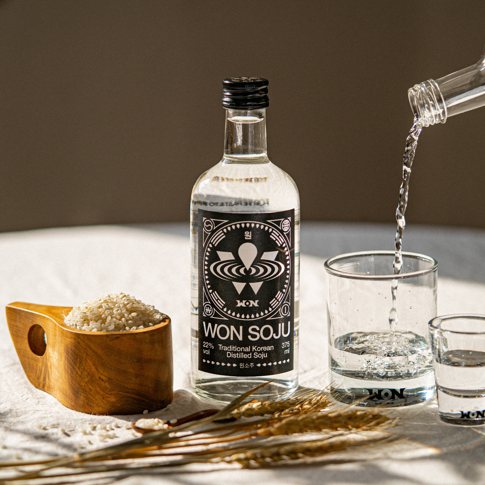
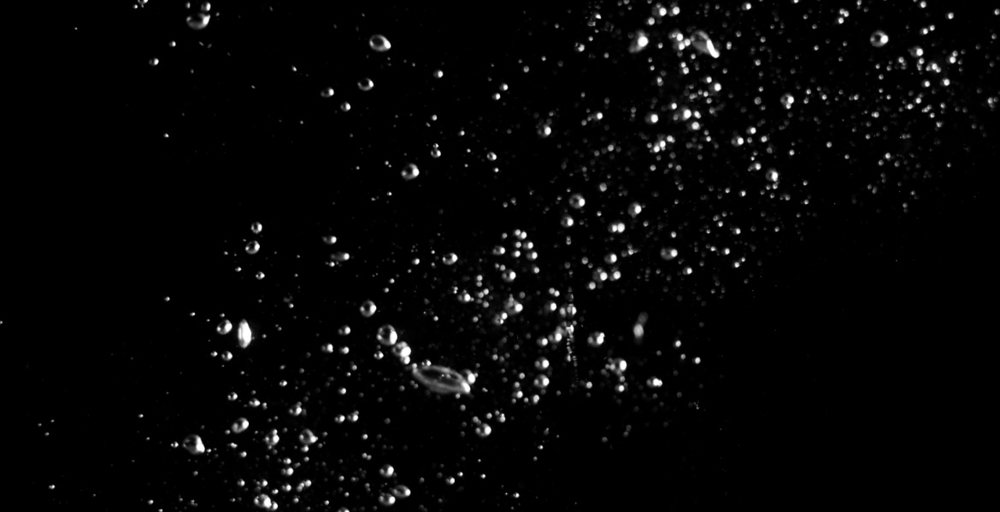
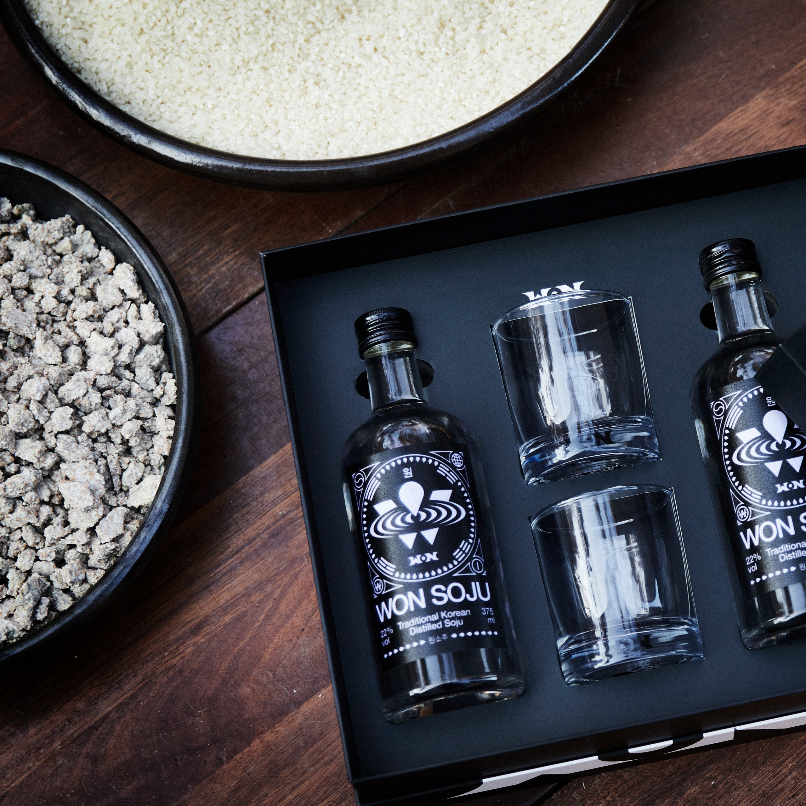
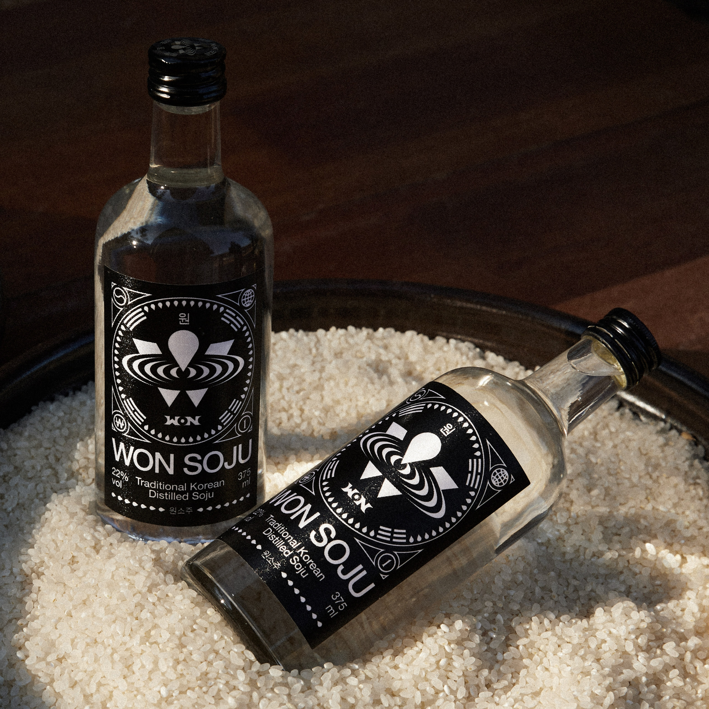

.svg)
WONSOJU는 정통 증류식 소주 새로운 글러벌 스탠다드.
국가대표 소주가 될 수 있도록 최선을 다하고 있습니다.
WON
승리
ONE
하나
WANT
소망
최초의 최초의 최초가 될 소주
제가 원래 소주를 안 마셨어요. 그러다 점점 한국화되면서 클럽에서 양주 먹고
샴페인 마시는 것보다 포차에서 인생 얘기하며 마시는 소주 문화가 좋아졌어요.
그 뒤로 술의 매력, 완성도 같은 것들을 따지게 됐고요.
증류식 소주는 위스키나 와인처럼 고유의 향과 맛이 있어요. 그 매력에 빠졌어요.
사카린 같은 화학품 없이 100% 쌀로 만들었으니 깔끔하고 뒤끝도 없고요.
저희 원소주의 목표는 미국 고급 바 같은 곳을 가면 일본 산토리 히비키 위스키가 다 있고,
어떤 술인지도 알고 있어요. 거기에 한국 술은 없거든요.
전 세계의 고급 바 같은 곳에서 마실 수 있는 소주를 만들고 싶어요.
미국 고급 바 같은 곳을 가면
일본 산토리 히비키 위스키가 다 있고,
어떤 술인지도 알고 있어요. 거기에 한국 술은 없거든요.
전 세계의 고급 바 같은 곳에서
마실 수 있는 소주를 만들고 싶어요.
원스피리츠 대표 박재범
한국 증류식 소주의 대해 얼마나 알고계신가요?
과실이나 곡물을 원료로 하여 술을 빚은 것은 오래된 일이지만,
이것을 다시 증류하여 만든 소주는 인간의 지혜가 상당히 진보된 후대의 산물입니다.
술의 증류법은 중세기 페르시아에서 발달되었다고 하며,
아라비아에서 만주를 거쳐 우리나라에 전해진 것으로 추측됩니다. 소주가 우리나라에 도입된 시기는 고려 시대,
몽골을 통해 도입되었고 조선시대에는 더욱 유행되어 이에 관한 기록도 많이 보고 되었습니다.
과실이나 곡물을 원료로 하여 술을 빚은 것은 오래된 일이지만,
이것을 다시 증류하여 만든 소주는
인간의 지혜가 상당히 진보된 후대의 산물입니다.
소주가 우리나라에 도입된 시기는 고려 시대,
몽골을 통해 도입되었고 조선시대에는 더욱 유행되어
이에 관한 기록도 많이 보고 되었습니다.
HISTORY

증류식 소주란, 쌀이나 고구마 등 곡물로 담근 밑술을
증류하여 얻는 한국의 전통 증류주입니다. 증류 기법은 고려 시대부터
전수되었으며, 쌀이 귀했던 조선 시대에는 약을 음용하듯 마셔
'약주'라고도 불렸습니다.
DISTILLATION METHODS

감압식 증류
DECOMPRESSION DISTILLATION
낮은 온도에서 증류하고 압을 낮춰 여과를 빠르게 함으로써
불순물을 제거하는 과정을 거칩니다.
높은 도수에도 향과 맛이 부드러운 전통 증류식
소주 제조에 활용되는 방식으로,상압식 증류방식보다
깨끗한 목넘김과 깔끔한 맛을 자랑합니다.
끓는점의 차이에 따라 감압식과 상압식 증류로 구분되며,
두 방식 모두 원료 본연의 맛을 풍부하게 재현합니다.
현대식 설비기술을 사용하여, 13세기부터 이어져온 전통 소주의
역사를 계승하고 있습니다.
상압식 증류
ATMOSPHERIC DISTILLATION
상온에서 압을 가해 끓이는 방식으로,
증류 과정에서 직화 혹은 증기 가열을 거칩니다.
전통 증류식 소주 특유의 짙은 향미에 최적화된 증류방식으로,
감압식 증류방식에 비해
더욱 농후하고 풍부한 아로마를 자랑합니다.

ADDITIVE-FREE

원소주는 남한강 상류의 섬강 주변에서 재배된
강원 원주의 특산품, 원주쌀 토토미로 제조됩니다.
어떠한 인공감미료도 첨가하지 않고 오로지 쌀 100%를
사용해 만들었습니다.
ENJOY WITH TRADITIONAL
DISTILLED SOJU WITH
100% WONSOJU PREMIUM RICE
100% 국내산 쌀로 만든.
원소주는 국내산 쌀 100%로 만든 증류식 소주입니다.
한국의 대표 청정지역인 원주와 인근 지역의 좋은 쌀,
좋은 물에서부터 시작됩니다.
TASTING NOTES
쌀로만 증류한 원소주는 쌀 본연의 곡물향이
은은하게 퍼지는 것이 장점이며, 숙성의 과정을 거쳐
알코올 특유의 쓴맛이 덜하고 깔끔하고 깨끗한
뒷맛을 자랑합니다.

ALCOHOL 28% 375ML
WONSOJU CLASSIC 28%
KRW 21,900
동증류기 상압방식으로 증류하여
풍부한 아로마와 깊고 부드러운 맛이 특징인 전통 증류식 소주